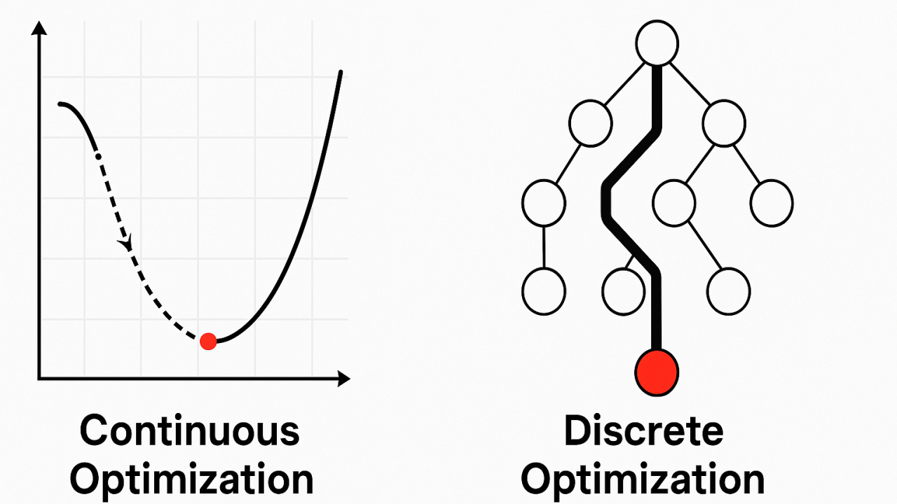
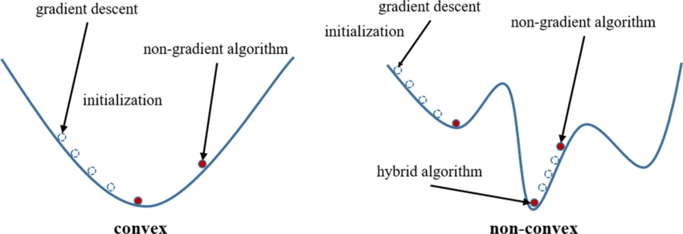
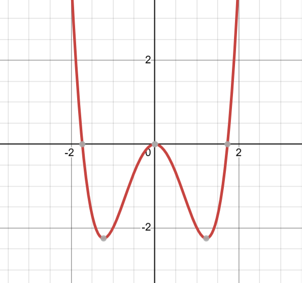
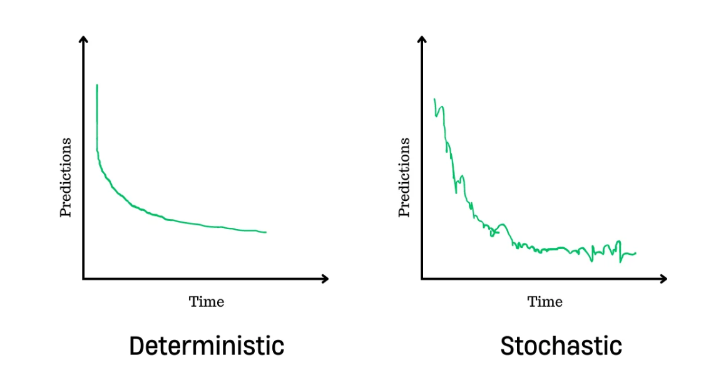
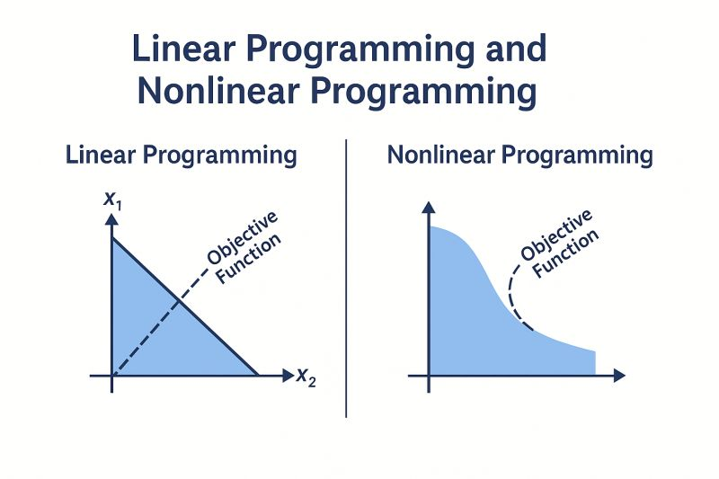

Phân loại các dạng Mô hình Tối ưu hóa
Posted: 03/04/2026
Khi mới bắt đầu tìm hiểu Machine Learning, AI hay Operations Research, chúng ta ít nhiều sẽ bắt gặp khái niệm optimization (tối ưu hóa). Tuy nhiên, điều khiến nhiều người dễ rối không phải là định nghĩa của nó, mà là số lượng lớn các thuật ngữ đi kèm: nào là convex, non-convex, discrete, continous, ... Trong bài viết này, mình sẽ giúp bạn xâu chuỗi các khái niệm tối ưu hóa một cách logic nhất qua những ví dụ thực tiễn. Không chỉ là định nghĩa, đây là lộ trình giúp bạn hiểu sâu, nhớ lâu và biết cách áp dụng chúng vào bài toán thực tế của mình.
1. Phân loại theo tính chất biến (Variable types): Continuous vs Discrete Optimization
Đầu tiên là phân loại dựa trên tính chất của biến quyết định có thể nhận. Theo đó, các bài toán được chia thành hai nhóm chính: continuous optimization và discrete optimization
Trong continuous optimization (tối ưu liên tục), các decision variables được giả định là nhận giá trị trong một không gian liên tục, thường là ℝn. Điều này cho phép tồn tại vô số giá trị trung gian giữa hai điểm bất kỳ, tạo tiền đề để áp dụng các công cụ giải tích như đạo hàm và gradient. Nhờ đó, thuật toán có thể khai thác thông tin về hướng và tốc độ thay đổi của hàm mục tiêu nhằm tìm kiếm nghiệm tối ưu (optimal solution) một cách hiệu quả.
Một ví dụ thường thấy của continuous optimization là bài toán hồi quy tuyến tính (linear regression), trong đó ta cần tìm vector tham số w ∈ ℝn sao cho MSE (Mean Squared Error) giữa giá trị dự đoán và giá trị thực tế là nhỏ nhất. Do hàm mục tiêu này liên tục và khả vi (differentiable), ta có thể áp dụng các thuật toán dựa trên gradient như Gradient Descent hay Stochastic Gradient Descent (SGD). Trong một số trường hợp, nghiệm tối ưu còn có thể tìm được trực tiếp dưới dạng closed-form (phương trình chuẩn - Normal Equation) thông qua đại số tuyến tính. Tương tự, quá trình thực hiện Neural Network thực chất là giải một bài toán tối ưu liên tục trên không gian tham số cực kỳ lớn.
Ngược lại, discrete optimization (tối ưu rời rạc) xét các bài toán mà biến quyết định chỉ có thể nhận giá trị trong một tập rời rạc, ví dụ số nguyên, nhị phân (0/1), hoặc các cấu hình tổ hợp. Giữa hai giá trị hợp lệ của biến không tồn tại giá trị trung gian. Điều này dẫn đến một không gian nghiệm (solution space) có cấu trúc rời rạc, thường là hữu hạn (finite) hoặc đếm được (countable), nhưng có thể rất lớn về mặt kích thước.

Ví dụ cơ bản là bài toán knapsack, trong đó mỗi item chỉ có thể được chọn (1) hoặc không chọn (0). Một ví dụ khác là bài toán Traveling Salesman Problem (TSP), nơi nghiệm là một hoán vị của các thành phố. Trong các bài toán này, không tồn tại khái niệm “di chuyển liên tục” từ một nghiệm này sang nghiệm khác, và do đó các phương pháp dựa trên gradient không thể áp dụng trực tiếp.
Sự khác biệt về bản chất của biến dẫn đến sự khác biệt về thuật toán. Trong continuous optimization, phương pháp chủ yếu là các phương pháp lặp (iterative methods) dựa trên đạo hàm, như Gradient Descent, Newton’s Method, hay Interior Point Methods. Các thuật toán này khai thác cấu trúc trơn (smoothness) của hàm mục tiêu để nhanh chóng hội tụ (convergence) đến nghiệm tối ưu (optimal solution). Trong khi đó, discrete optimization thường phải dựa vào các phương pháp tìm kiếm trên không gian nghiệm và các kỹ thuật tổ hợp, như Branch and Bound, Dynamic Programming. Các phương pháp này thường đảm bảo tìm được nghiệm chính xác (exact solution), nhưng có thể gặp vấn đề về tốc độ tính toán (computational cost) khi kích thước bài toán tăng lên. Trong thực tế, đối với các bài toán lớn, người ta thường sử dụng các phương pháp heuristic để tìm nghiệm đủ tốt trong thời gian hợp lý.
Một điểm đáng chú ý là ranh giới giữa discrete và continuous không phải lúc nào cũng tuyệt đối. Trong nhiều trường hợp, người ta sử dụng kỹ thuật relaxation để chuyển một bài toán rời rạc sang dạng liên tục, nhằm tận dụng các thuật toán hiệu quả hơn. Ví dụ, trong integer programming, các ràng buộc nguyên có thể được nới lỏng (relaxation) để tạo thành một bài toán linear programming. Nghiệm của bài toán relaxed sau đó có thể được sử dụng để xây dựng hoặc ước lượng nghiệm nguyên cho bài toán ban đầu.
2. Phân loại theo cấu trúc: Convex Optimization vs Non-Convex Optimization
Trong continuous optimization, một tiêu chí quan trọng khác là tính convex của bài toán. Một bài toán được gọi là convex optimization khi cả hàm mục tiêu f(x) và tập nghiệm khả thi (feasible set) X đều là lồi (convex). Về trực quan, đồ thị hàm mục tiêu không có “vùng lõm”: nếu nối hai điểm bất kỳ trong tập nghiệm bằng một đoạn thẳng, toàn bộ đoạn thẳng nằm trong feasible set. Điểm đặc biệt quan trọng của convex optimization là mọi nghiệm cục bộ (local optimum) đều là nghiệm toàn cục (global optimum). Điều này có nghĩa là nếu thuật toán tìm ra một điểm mà tại đó giá trị hàm mục tiêu không thể giảm thêm, thì đó chắc chắn là optimal solution trên toàn bộ solution space.
Ngược lại, non-convex optimization bao gồm tất cả các bài toán mà hàm mục tiêu hoặc tập khả thi có thể chứa “vùng lõm” hay nhiều cực trị. Trong trường hợp này, bài toán có thể tồn tại nhiều local minima và saddle points (điểm yên ngựa), khiến thuật toán dễ bị “mắc kẹt” tại một local optimum và không đảm bảo tìm được global optimum.

Để minh họa, hãy xét hai ví dụ đơn giản. Với trường hợp convex, hàm f(x) = x2 có dạng hình chữ U, và dù khởi tạo từ đâu, các thuật toán tối ưu đều hội tụ về x = 0, là global optimum. Ngược lại, với hàm non-convex f(x) = x4 − 3x2, tồn tại nhiều điểm cực trị, bao gồm hai local minima tại x = ±√(3/2) và một local maximum tại x = 0. Trong trường hợp này, nếu thuật toán được khởi tạo gần một local minimum, nó có thể hội tụ tại đó và không tìm được nghiệm tốt hơn ở các vùng khác của không gian nghiệm.


Sự khác biệt này dẫn đến các lựa chọn thuật toán khác nhau. Với convex optimization, có thể sử dụng các thuật toán gradient-based như Gradient Descent, Newton’s Method, hoặc các phương pháp cho bài toán có ràng buộc như Interior Point Methods. Trong khi đó, với non-convex optimization, các thuật toán gradient-based như Gradient Descent vẫn được sử dụng nhưng chỉ đảm bảo hội tụ đến một local optimum. Để cải thiện kết quả, người ta sử dụng các biến thể như Stochastic Gradient Descent (SGD), Momentum, hoặc các phương pháp heuristic nhằm tăng khả năng thoát khỏi các local minimum.
Về mặt ứng dụng, convex optimization xuất hiện nhiều trong bài toán mà tính toàn cục (global) và độ ổn định (stability) rất quan trọng. Ví dụ, linear regression với hàm MSE là một bài toán convex, bài toán portfolio optimization thường là quadratic convex. Ngược lại, non-convex optimization xuất hiện phổ biến trong deep learning, nơi quá trình huấn luyện neural network tương đương với tối ưu một hàm loss phi lồi trong không gian tham số rất lớn. Ngoài ra, các bài toán như matrix factorization, clustering, hay reinforcement learning cũng thường mang tính non-convex.
Tóm lại, sự khác biệt giữa convex và non-convex optimization không chỉ là đặc điểm hình học của hàm mục tiêu, mà còn ảnh hưởng trực tiếp đến độ khó của bài toán, lựa chọn thuật toán và mức độ đảm bảo về nghiệm tìm được. Convex optimization mang lại tính ổn định và các đảm bảo lý thuyết mạnh, trong khi non-convex optimization phản ánh sự phức tạp của các bài toán thực tế, đòi hỏi các phương pháp linh hoạt và đôi khi phải chấp nhận approximate solution.
3. Phân loại theo ràng buộc: Unconstrained vs Constrained Optimization
Một cách phân loại khác trong tối ưu hóa dựa trên sự tồn tại của ràng buộc trên biến quyết định là unconstrained optimization và constrained optimization. Sự khác biệt này ảnh hưởng đến mô hình bài toán, thuật toán và cách đánh giá nghiệm.
Unconstrained Optimization là những bài toán mà biến quyết định có thể nhận bất kỳ giá trị nào trong solution space, mà không có ràng buộc nào. Nói cách khác, thuật toán có thể di chuyển tự do theo hướng giảm của hàm mục tiêu mà không lo vi phạm bất kỳ giới hạn nào. Đây là trường hợp đơn giản nhất, thường gặp trong các bài toán continuous optimization như linear regressions hoặc neural networks. Trong trường hợp convex, việc tìm global optimum trở nên dễ hơn vì có thể dùng các phương pháp gradient-based kết hợp với step size phù hợp để hội tụ nhanh hơn.
Constrained Optimization là những bài toán mà biến quyết định phải thỏa mãn một tập hợp các ràng buộc nhất định, có thể là linear constraints hoặc non-linear constraints, và đôi khi là ràng buộc nguyên (integer constraints). Các ràng buộc có thể được phân loại như sau:
- Hard constraints: bắt buộc phải thỏa, ví dụ như tổng số lượng hàng hóa trong bài toán logistics không vượt quá giới hạn kho.
- Soft constraints: cho phép vi phạm một chút, nhưng sẽ bị phạt trong hàm mục tiêu, ví dụ như chi phí trễ trong scheduling được thêm vào loss function.
Trong nhiều bài toán, việc giải bài toán relaxed (nới lỏng các ràng buộc) trước rồi chuyển nghiệm sang bài toán gốc giúp tăng hiệu quả tính toán. Đối với non-convex constrained problems, thuật toán thường tìm local optimum hoặc approximate solution, và convergence rate phụ thuộc mạnh vào độ phức tạp của hàm mục tiêu và tập nghiệm khả thi.
4. Phân loại theo tính xác định (certainty): Deterministic vs Stochastic vs Robust Optimization
Trong deterministic optimization, tất cả các tham số đầu vào đều đã biết trước và cố định. Do đó, với cùng một input, thuật toán luôn trả về cùng một kết quả (output) duy nhất. Tính ổn định và tốc độ hội tụ (convergence rate) của thuật toán lúc này phụ thuộc hoàn toàn vào đặc điểm hình học của hàm mục tiêu (tính lồi, tính trơn). Ví dụ, các bài toán linear programming, quadratic programming với dữ liệu cố định, hoặc các bài toán convex optimization truyền thống đều thuộc dạng deterministic. Trong các bài toán này, các thuật toán lặp (iterative) có khả năng đảm bảo sự hội tụ với tốc độ có thể dự đoán được về mặt lý thuyết. Một điểm quan trọng khác là trong deterministic optimization, ta đang giả định rằng mọi thông tin đều chính xác và không thay đổi. Điều này giúp bài toán dễ giải hơn, nhưng đôi khi lại kém linh hoạt khi áp dụng vào để giải quyết các vấn đề trong thực tế.

Ngược lại với deterministic optimization, stochastic optimization xử lý các bài toán có chứa yếu tố ngẫu nhiên (randomness) hoặc nhiễu (noise) trong dữ liệu, ràng buộc hoặc môi trường. Do tồn tại sự bất định (uncertainty), cùng một đầu vào nhưng các lần chạy khác nhau có thể cho ra kết quả khác nhau. Vì vậy, nghiệm thu được thường không phải là một giá trị cố định duy nhất, mà là nghiệm xấp xỉ (approximate solution) hoặc hội tụ quanh các vùng tối ưu (local/global optimum).
Thay vì tối ưu một hàm mục tiêu cố định như trong deterministic optimization, stochastic optimization nhìn bài toán theo một góc độ thực tế hơn: tương lai không chắc chắn, nên kết quả cũng không thể chỉ dựa trên một kịch bản duy nhất. Nói đơn giản, thay vì hỏi “phương án nào là tốt nhất nếu mọi thứ diễn ra đúng như dự đoán?”, ta chuyển sang hỏi: “phương án nào sẽ hoạt động tốt nhất trong nhiều tình huống khác nhau?” Vì vậy, mục tiêu không còn là tìm một nghiệm tối ưu cho một trường hợp cụ thể, mà là tìm một chiến lược (policy) đủ “ổn định” và hiệu quả trên toàn bộ các khả năng có thể xảy ra. Cách tiếp cận này giống như việc ta không đặt cược vào một kịch bản duy nhất, mà chuẩn bị cho nhiều kịch bản khác nhau cùng lúc. Nói cách khác, thay vì tối ưu một giá trị chắc chắn, ta tối ưu cho kết quả trung bình hoặc cố gắng giảm thiểu rủi ro khi mọi thứ không diễn ra như kỳ vọng.
Để giải quyết các bài toán stochastic quy mô lớn, hai hướng tiếp cận phổ biến thường được sử dụng:
- Scenario Reduction: Đây là phương pháp tác động trực tiếp vào dữ liệu. Thay vì xử lý hàng triệu kịch bản (scenarios) có thể xảy ra, ta chọn ra một tập con nhỏ các kịch bản đại diện (representative scenario). Các kịch bản có tính chất giống nhau sẽ được gom cụm (clustering) lại, và mỗi nhóm được đại diện bởi một kịch bản duy nhất với trọng số phù hợp. Nhờ đó, kích thước bài toán giảm đáng kể trong khi vẫn giữ được các đặc trưng thống kê quan trọng.
- Benders Decomposition: Đây là phương pháp tác động vào cấu trúc của bài toán. Ý tưởng chính là tách bài toán lớn thành hai phần: Master Problem (quyết định các biến chính) và Sub-problems (giải phần còn lại khi các biến này đã được cố định). Master Problem đề xuất một nghiệm, sau đó các sub-problems sẽ kiểm tra tính khả thi hoặc đánh giá chất lượng của nghiệm đó. Kết quả được phản hồi ngược lại dưới dạng các ràng buộc bổ sung (gọi là Benders cuts) để dần hoàn thiện nghiệm. Quá trình này lặp lại cho đến khi hội tụ về nghiệm tối ưu. Cách tiếp cận này hiệu quả cho các bài toán lớn, và có thể tận dụng tính toán song song nếu có nhiều sub-problems độc lập.
Trong thực tế, stochastic optimization được sử dụng trong nhiều lĩnh vực khác nhau. Trong Machine Learning (ML), Stochastic Gradient Descent (SGD) hay được dùng nhiều nhất. Thay vì tính đạo hàm trên toàn bộ hàng chục triệu mẫu dữ liệu (rất tốn kém), thuật toán chỉ bốc ngẫu nhiên một nhóm nhỏ (mini-batch) để ước lượng hướng đi. Dù ước lượng này có sai số, nhưng tính ngẫu nhiên lại giúp mô hình thoát khỏi các local minima và hội tụ nhanh hơn đến nghiệm tổng quát.
Trong Operations Research (OR): Các bài toán thực tế trong quản lý tồn kho (Inventory Problem) hay điều phối lưới điện (Unit Commitment Problem) luôn đối mặt với nhu cầu (demand) biến động. Phương pháp stochastic optimization cho phép các nhà quản lý lập kế hoạch dự phòng nhiều giai đoạn: đưa ra quyết định ban đầu, sau đó hiệu chỉnh lại khi các yếu tố ngẫu nhiên dần lộ diện (recourse).
Trong nhánh uncertainty, ta còn một dạng mô hình khác là Robust Optimization. Trong khi stochastic dựa vào xác suất để tối ưu hóa giá trị kỳ vọng (trung bình), thì Robust Optimization lại dựa trên tập hợp (uncertainty set) để tối ưu hóa cho kịch bản tệ nhất (worst-case scenario). Nghĩa là, Ta không cần biết chính xác xác suất xảy ra biến cố là bao nhiêu phần trăm, ta chỉ cần xác định một "khoảng biến động" an toàn là đủ (ví dụ nhu cầu khách hàng nằm trong khoảng từ 80 đến 120 đơn vị).
Điểm nổi bật của Robust Optimization là tính bảo thủ (conservative). Một nghiệm được gọi là "robust" nếu nó đảm bảo tính khả thi cho mọi kịch bản có thể xảy ra trong uncertainty set đã xác định. Điều này cực kỳ quan trọng trong các hệ thống yêu cầu độ an toàn tuyệt đối như điều phối lưới điện hay y tế (Vaccince Cold Chain), nơi một sai sót nhỏ do biến động ngẫu nhiên cũng có thể dẫn đến hậu quả nghiêm trọng. Tuy nhiên, sự an toàn này luôn đi kèm với một sự đánh đổi: vì luôn chuẩn bị cho tình huống xấu nhất, chi phí vận hành của mô hình robust thường cao hơn so với stochastic.
Tóm lại, sự khác biệt giữa các mô hình trên không chỉ là về mặt lý thuyết (tính certainty), mà còn phản ánh cách chúng ta nhìn nhận và giải quyết các bài toán trong thế giới thực. Nếu như deterministic là việc giải một mô hình trong phòng thí nghiệm với mọi thông số được kiểm soát, thì stochastic optimization là cuộc chơi thực tế ngoài thị trường, nơi ta phải sẵn sàng chấp nhận rủi ro, học từ sai số để tìm ra giải pháp có lợi nhất trên mức trung bình. Trong khi đó, Robust Optimization đại diện cho cách tiếp cận thận trọng, nó không đặt cược vào những gì “có khả năng xảy ra”, mà chuẩn bị cho những gì có thể xảy ra tệ nhất. Thay vì tìm phương án tốt nhất trong điều kiện lý tưởng, nó hướng tới một nghiệm đủ tốt nhưng luôn đáng tin cậy trong mọi tình huống. Vì vậy, việc lựa chọn mô hình không chỉ phụ thuộc vào dữ liệu, mà còn là bài toán đánh đổi giữa hiệu năng tối ưu và độ tin cậy. Trong một thế giới đầy biến động, đôi khi nghiệm “an toàn” lại có giá trị không kém gì nghiệm “tối ưu”.
5. Phân loại theo tính chất hàm (Functional Property): Linear vs Nonlinear Programming
Một phân loại khác trong tối ưu hóa dựa trên tính chất của hàm mục tiêu và các ràng buộc là Linear Programming (LP) và Non-Linear Programming (NLP). Phân loại này rất quan trọng vì nó quyết định loại thuật toán, độ khó bài toán và khả năng tìm được global optimum.
Linear Programming (LP) là các bài toán mà cả objective function và tất cả các ràng buộc đều là tuyến tính. Đặc điểm này làm cho feasible region là convex, và các thuật toán có thể đảm bảo tìm global optimum chính xác. Ví dụ cơ bản là bài toán portfolio, bài toán allocation resource với các ràng buộc tuyến tính về nguyên vật liệu. Các thuật toán phổ biến cho LP gồm Simplex Method, Interior Point Methods.

Non-Linear Programming (NLP) bao gồm tất cả các bài toán mà hàm mục tiêu hoặc ràng buộc là phi tuyến, có thể convex hoặc non-convex. NLP thường phức tạp hơn LP vì có thể xuất hiện nhiều local optimum, saddle points, hoặc vùng lõm trong feasible region. Các thuật toán phổ biến cho NLP bao gồm Gradient Descent, Newton’s Method, Sequential Quadratic Programming (SQP), hoặc các heuristic cho non-convex NLP. Trong nhiều trường hợp, nghiệm tìm được là approximate solution và không đảm bảo global optimum, đặc biệt khi bài toán non-convex hoặc dữ liệu stochastic.
Ứng dụng của NLP rất rộng: sử dụng trong neural network (deep learning), tối ưu hóa thiết kế kỹ thuật với ràng buộc phi tuyến, logistics, control systems, và portfolio optimization với rủi ro phi tuyến.
6. Phân loại theo cách thức hoạt động của thuật toán: Finite-Terminating, Iterative và Heuristic
Trong tối ưu hóa, không chỉ bài toán mà loại thuật toán cũng ảnh hưởng lớn đến hiệu quả và kết quả cuối cùng. Thuật toán tối ưu thường được chia thành ba nhóm chính dựa trên cách chúng tìm nghiệm: finite-terminating algorithms, iterative methods, và heuristic-based models. Mỗi nhóm có đặc điểm, ưu nhược điểm và ứng dụng riêng, và hiểu rõ các nhóm này giúp ta có thể lựa chọn giải pháp phù hợp với từng bài toán cụ thể.
6.1. Finite-Terminating Algorithms
Nhóm này bao gồm các thuật toán đảm bảo tìm ra nghiệm chính xác (exact solution). Nghĩa là, sau khi thuật toán kết thúc, ta có thể chắc chắn rằng nghiệm tìm được là global optimum của bài toán. Ví dụ, Branch and Bound thường dùng trong mô hình integer programming. Thuật toán chia không gian nghiệm thành các nhánh con, loại bỏ những nhánh chắc chắn không chứa nghiệm tốt, và dần tìm ra nghiệm tối ưu.
Ưu điểm của nhóm này là độ chính xác cao, đảm bảo nghiệm tối ưu. Nhược điểm là khi bài toán quá lớn hoặc không gian nghiệm quá rộng, thời gian tính toán có thể tăng lên rất nhanh.
6.2. Iterative Methods (Phương pháp lặp)
Các phương pháp lặp sẽ không dừng sau một số bước nhất định, mà tạo ra một chuỗi nghiệm xấp xỉ (approximate solution) ngày càng tốt hơn. Thuật toán sẽ dừng khi thỏa mãn tiêu chí hội tụ (convergence condition), ví dụ khi hiệu của hàm mục tiêu hoặc nghiệm giữa hai step liên tiếp nhỏ hơn một ngưỡng ε nhất định.
Ví dụ thường thấy là Gradient Descent hay được sử dụng đạo hàm để xác định hướng giảm nhanh nhất của hàm mục tiêu. Khi di chuyển theo hướng này nhiều lần, giá trị hàm mục tiêu sẽ giảm dần và hội tụ tới nghiệm cực tiểu (có thể là local hoặc global tùy bài toán). Một ví dụ khác là Newton’s Method, dùng thông tin về Hessian để khai thác độ cong của hàm mục tiêu, phương pháp này thường hội tụ nhanh hơn Gradient Descent.
Ưu điểm của phương pháp lặp là thường hiệu quả với bài toán quy mô lớn và có thể đạt độ chính xác tùy ý (bằng cách giảm ngưỡng ε). Nhược điểm là không luôn đảm bảo tìm global optimum trong các bài toán non-convex hoặc rời rạc.
6.3. Thuật toán heuristic
Các thuật toán heuristic không đảm bảo hội tụ đến nghiệm tối ưu, nhưng được thiết kế để khám phá không gian nghiệm một cách thông minh, nhằm tìm nghiệm đủ tốt trong thời gian hợp lý. Những phương pháp này đặc biệt hữu ích khi bài toán phức tạp, không gian nghiệm lớn hoặc rời rạc, và các phương pháp exact hoặc iterative trở nên không khả thi.
Ví dụ:
- Tabu Search: Sử dụng một danh sách cấm (tabu list) để tránh quay lại những nghiệm đã thăm trước đó. Điều này giúp vượt qua các điểm tối ưu cục bộ và khám phá không gian nghiệm rộng hơn
- Simulated Annealing: Thuật toán lấy cảm hứng từ quá trình làm lạnh kim loại trong vật lý, cho phép chấp nhận những bước đi “tệ hơn” với một xác suất giảm dần theo thời gian. Cơ chế này giúp thoát khỏi local optimum và tiến dần tới nghiệm global optimum.
- Variable Neighbourhood Search: Thuật toán này thay đổi kích thước hoặc kiểu tập nghiệm xung quanh (neighbourhood) trong quá trình tìm kiếm, nhằm tìm kiếm nhiều hơn các giải pháp trong không gian nghiệm.
- Ant Colony Optimization: Lấy cảm hứng từ hành vi tìm đường của kiến, mỗi “con kiến” để lại pheromone đánh dấu các đường đi tốt, từ đó hướng dẫn các con kiến khác. Thuật toán này đặc biệt mạnh trong các bài toán tối ưu lộ trình, vận tải và mạng (network design).
- Genetic Algorithm: Lấy cảm hứng từ quá trình tiến hóa trong sinh học, Genetic Algorithm sử dụng các khái niệm như sinh sản, đột biến và chọn lọc để tìm kiếm nghiệm tối ưu. Phương pháp này thường hiệu quả trong việc giải các bài toán phức tạp với không gian nghiệm lớn.
Ưu điểm của heuristic là linh hoạt, có thể áp dụng cho các bài toán phức tạp, đặc biệt là non-convex hoặc discrete. Nhược điểm là không có đảm bảo về nghiệm toàn cục và kết quả có thể thay đổi giữa các lần chạy.
Tóm tắt về ba nhóm thuật toán:
| Nhóm thuật toán | Đặc điểm chính | Ưu điểm | Nhược điểm |
|---|---|---|---|
| Finite-Terminating | Dừng sau số bước hữu hạn, tìm nghiệm tối ưu chính xác | Đảm bảo global optimum | Tốn nhiều thời gian với bài toán lớn |
| Iterative | Lặp nhiều bước, hội tụ khi sai số < ε | Hiệu quả cho bài toán lớn, có thể điều chỉnh độ chính xác | Không đảm bảo global optimum trong non-convex/discrete |
| Heuristic | Không đảm bảo hội tụ, khám phá thông minh | Linh hoạt, phù hợp bài toán phức tạp | Nghiệm chỉ xấp xỉ, kết quả thay đổi giữa lần chạy |
Như vậy, khi giải quyết một bài toán tối ưu, việc nhận diện loại bài toán (convex/non-convex, discrete/continuous) kết hợp với loại thuật toán (finite-terminating, iterative, heuristic) sẽ giúp lựa chọn phương pháp phù hợp, cân bằng giữa độ chính xác và thời gian tính toán, đồng thời định hình kỳ vọng về chất lượng nghiệm cuối cùng.
7. Phân loại theo chất lượng và độ tin cậy của nghiệm: Exact và Approximation/Heuristic
Trong Optimization nói chung và Operation Research nói riêng, ta còn có cách phân loại dựa trên "độ tốt" của nghiệm cuối cùng so với nghiệm tối ưu thực tế. Cách phân loại này giúp ta giải bài toán xác định được mức độ đánh đổi giữa thời gian tính toán và chất lượng kết quả. Chi tiết về cách phân loại này, mình đã trình bày trong bài viết về Quy hoạch toán học, bạn có thể tìm đọc để hiểu rõ thêm. Ở đây, mình sẽ tóm tắt lại một số điểm chính về hai nhóm thuật toán này:
- Exact algorithms: Nhóm thuật toán này cam kết tìm ra đúng nghiệm tối ưu nhất của bài toán. Một thuật toán được coi là "exact" khi nó có khả năng chứng minh toán học rằng không tồn tại nghiệm nào tốt hơn nghiệm mà nó vừa tìm được. Đặc điểm của nhóm này thường trùng khớp với Finite-Terminating (như Simplex hay Branch and Bound). Tuy nhiên, cái giá phải trả là chi phí tính toán (computational cost) rất cao khi kích thước dữ liệu tăng theo hàm mũ. Nó thường dùng cho các bài toán quy mô vừa và nhỏ, hoặc các bài toán mà sai số dù nhỏ nhất cũng gây thiệt hại lớn (job shop scheduling, portfolio optimization).
- Approximation/Heuristic algorithms: Được sử dụng khi bài toán quá phức tạp hoặc có không gian nghiệm quá lớn, khiến việc tìm ra nghiệm tối ưu chính xác trở nên không khả thi trong thời gian hợp lý. Trong đó, thuật toán xấp xỉ (approximation algorithm) có chứng minh toán học về khoảng cách tới nghiệm tối ưu (optimality gap), nó đảm bảo nghiệm thu được không tệ hơn một tỷ lệ nhất định so với nghiệm tối ưu. Ngược lại, Heuristics không đảm bảo nghiệm tìm được là tối ưu tuyệt đối. Thay vào đó, mục tiêu của chúng là tìm lời giải đủ tốt trong thời gian hợp lý. Heurisitc không có chứng minh toán học về khoảng cách tới nghiệm tối ưu (optimality gap). Một thuật toán Heuristic có thể tìm ra nghiệm rất gần tối ưu cho bộ dữ liệu này, nhưng lại cho kết quả rất tệ với bộ dữ liệu khác. Trong nhiều tài liệu, 2 thuật toán này được sử dụng bổ sung đồng thời qua lại nhau nên tôi gộp nó chung vào một loại cho dễ hình dung. Nhóm thuật toán này thường được dùng trong các bài toán NP-hard lớn trong thực tế như điều hành cả một hệ thống logistics toàn cầu hoặc lập lịch cho hàng ngàn chuyến bay, nơi mà việc chờ đợi để một thuật toán chính xác được giải là bất khả thi.
8. Phân loại bậc đạo hàm: n-th Order Optimization Algorithms
Các thuật toán tối ưu cũng có thể được phân loại dựa trên thông tin đạo hàm mà chúng sử dụng, gọi là n-th order algorithms. Sự phân loại này giúp xác định step size, convergence rate, và độ phức tạp tính toán của thuật toán.
- Zero-order algorithms (Derivative-free): Không sử dụng đạo hàm, chỉ dựa trên giá trị hàm mục tiêu (function values). Phù hợp khi hàm là black-box, không biết explicit form. Ví dụ: Genetic Algorithms, Simulated Annealing, Nelder-Mead Method. Kết quả thường là approximate solution, convergence rate chậm, đặc biệt trong không gian lớn.
- First-order algorithms: Sử dụng thông tin gradient để xác định hướng giảm nhanh nhất của hàm mục tiêu. Ví dụ: Gradient Descent, Stochastic Gradient Descent (SGD), Momentum, Adam. Step size (learning rate) ảnh hưởng trực tiếp đến convergence rate và khả năng hội tụ tới local/global optimum.
- Second-order algorithms: Sử dụng thông tin Hessian (đạo hàm bậc hai) để khai thác curvature của hàm mục tiêu. Ví dụ: Newton’s Method, Quasi-Newton Methods (BFGS, L-BFGS). Convergence rate nhanh hơn first-order methods, nhưng chi phí tính toán cao hơn, đặc biệt với bài toán nhiều biến. Thường áp dụng trong convex optimization hoặc khi cần hội tụ nhanh tới global optimum.
Các thuật toán bậc cao hơn (n-th order, n ≥ 2) giúp tăng tốc độ hội tụ (convergence rate) và cải thiện chất lượng nghiệm, nhưng thường đi kèm chi phí tính toán lớn. Việc lựa chọn thuật toán phù hợp phụ thuộc vào loại bài toán (convex/non-convex, continuous/discrete), tính chất dữ liệu (deterministic/stochastic), và yêu cầu về approximate solution hoặc exact global optimum.